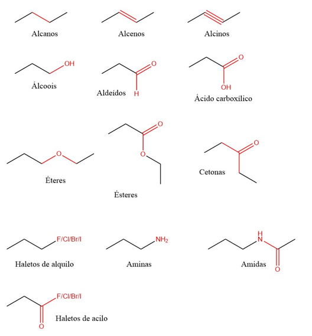
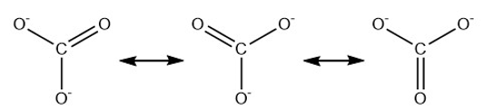
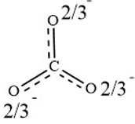
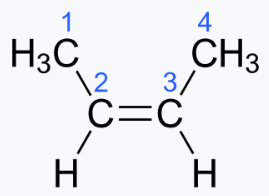
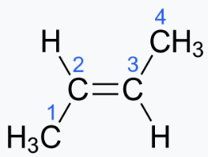
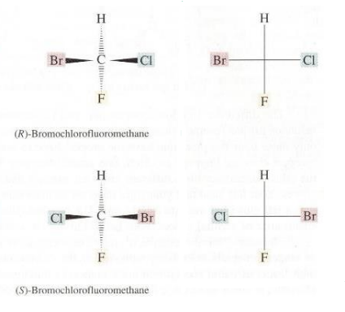
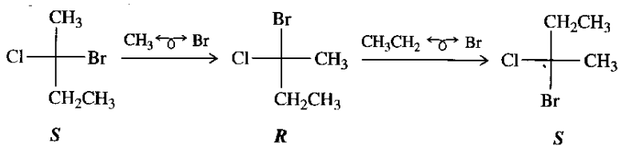
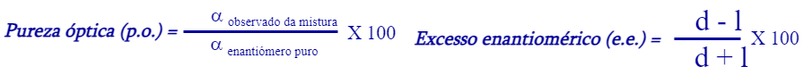
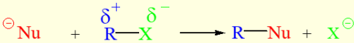
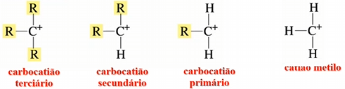

Mecanismo da reação: descrição do movimento dos eletrões numa reação. Uma seta normal representa o movimento de um par de eletrões, enquanto que meia seta representa um único eletrão.
Momento dipolar: medida da polaridade de uma ligação. Pode ser representada por uma seta que indica a "orientação" da ligação, ou seja, onde há mais eletrões.
Reação regiosseletiva: forma preferencialmente um dos isómereos estruturais possíveis
Reação estereosseletiva: forma preferencialmente um dos estereoisómeros possíveis
Reação estereoespecífica: origina um produto diferente dependendo do esterioisómero que reage
Adição syn: adicionam-se substituintes ao mesmo lado da molécula. Ex: epoxidação
Adição anti: adicionam-se substituintes a lados opostos da molécula. Ex: bromização
Nucleófilos: espécies que doam um par de eletrões para formar ligações.
Eletrófilos: espécies que aceitam um par de eletrões numa reação química.
Se admitissemos que o carbono se ligasse sempre através das orbitais s e p (sem hibridização), as ligações numa molécula como o CH4 não seriam todas iguais, devido às diferenças entre as orbitais, mas verifica-se que as ligações são todas iguais. Isto dá-se pois as orbitais s e p "juntam-se", formando orbitais hibridizadas. No caso do CH4, a hibridização é do tipo sp3, pois combina-se uma orbital s com 3 orbitais p, formando 4 orbitais sp3. Contudo, nem sempre é mais vantajoso hibridizar todas as orbitais, e surgem também hibridizações como sp2 e sp.
As ligações (no carbono) podem então ser classificadas de acordo com o tipo de orbitais que participam: sp3, sp2 e sp correspondem a ligações sigma,σ; e orbitais p correspondem a ligações pi,π. Para mais detalhes consultar: Teoria de orbitais moleculares. Uma ligação dupla, corresponde a uma ligação sigma e uma ligação pi, enquanto que uma tripla é uma sigma e duas pi. Quanto mais ligações entre os carbonos mais linear a molécula fica, pois ligam-se menos de outros átomos (hidrogénio), pelo que é necessário ocupar menos espaço, tornando a molécula mais linear.
Entre carbono e hidrogénio só se estabelecem ligações sigma, visto que o hidrogénio não possui eletrões nas orbitais p.
As ligações sigma são mais fortes que as pi, pelo que ao quebrar uma ligação dupla ou tripla, as pi quebram-se primeiro
Alguns dos grupos funcionais importantes para a química orgânica estão representados a seguir:
Em algumas moléculas existem múltiplas estruturas semelhantes que se podem converter umas nas outras. Estas chamam-se de estruturas de ressonância e ao fazer a média de todas estas estruturas obtem-se o híbrido de ressonância. Ex:
 Os isómeros são moléculas que possuem a mesma fórmula molecular, mas diferente estrutura.
É possível distinguir diferentes tipos de isomeria, isomeria constitucional e estereoisomeria. Na primeira, é possível reconhecer o fenómeno apenas pela análise da estrutura plana, pois os átomos estão ligados em diferente ordem. A estereoisomeria pode ser dividida em isomerismo conformacional e isomeria de configuração. A isomeria de configuração dividi-se em enantiomeria e diasteriomeria
Os diastereoisómeros têm distribuição espacial diferente e não são imagens uns dos outros num espelho plano.
Este tipo de fenómeno ocorre, por exemplo, na presença de ligações duplas e triplas, pois ao contrário das ligações simples, não possuem rotação livre. Sendo assim as moléculas a seguir representadas não são interconversíveis, pois é necessário energia para quebrar a ligação dupla que as permite rodar.
 Para classificar este tipo de composto, em que dois dos substituintes são hidrogénios, usa-se a nomenclatura cis-trans. Quando o composto tem os dois hidrogénios no mesmo lado, o composto é cis, o que correponde à primeira imagem, que é o cis-2-buteno. Quando os hidrogénios estão em lados opostos diz-se trans, pelo que a segunda imagem é o trans-2-buteno.
Contudo, nem sempre os hidrogénios serão substituintes, em que nesse caso usa-se a nomenclatura Z-E. É considerado Z quando os substituintes de maior prioridade estão no mesmo lado, correspondendo à nomenclatura cis. Quanto os subsituintes de maior prioridade estão em lados opostos diz-se E, e correponde ao trans. Existem algumas regras para determinar a prioridade:
São imagens uns dos outros num espelo plano. Este fenómeno geralmente ocorre por presença de um carbono quiral/centro quiral/carbono assimétrico/centro estereogénico, que está ligado a quatro grupos diferentes. Estes carbonos originam moléculas quirais que só diferem experimentalmente através da rotação especifica. Deste modo, para uma molécula ser quiral não podem existir planos de simetria.
Para classificar este tipo de molécula é necessário determinar a sua configuração absoluta e usa-se o sistema R/S, em que primeiro se atribuem prioridades de acordo com as mesmas regras dos diastereoisómeros, e orienta-se a molécula de modo a que o grupo de menor prioridade fique para trás do plano. Se a ordem dos restantes constituintes está de acordo com o sentido horário diz-se R, mas se for antihorário, diz-se S. Ao analisar uma fórmula estrutural em linhas pode ser dificil imaginar o grupo de menor prioridade orientado para trás, por isso pode ser mais fácil, verificar logo a orientação dos 3 grupos de maior prioridade e, se o grupo de menor prioridade já estava para trás então essa orientação está certa, mas se o grupo de menor prioridade estava orientado para a frente, essa orientação está errada, logo só pode ser a oposta.
Em moléculas que possuem mais que um centro estereogénico, para serem enantiómeros todos os carbonos quirais devem ser diferentes, por exemplo uma molécula que tenha os carbonos com R,S só é enantiómero da que possui S,R; a relação face a R,R e S,S é de diasteriomeria.
Uma molécula com n centros estrogénicos pode ter no máximo 2n esterioisómeros, no entanto caso existam carbonos quirais iguais, pode significar a existência de planos de simetria nos compostos, o que significa que são iguais. Estes compostos iguais chamam-se mesógiros ou isómeros meso, que por possuirem plano de simetria não são quirais, apesar de possuirem carbonos quirais.
Existe ainda outra designação para quando os carbonos quirais têm constituintes iguais que é eritro-treo, em que se diz que um eritro tem grupos iguais no mesmo lado, enquanto que os grupos iguais no treo estão em lados opostos.
A projeção de Fischer é um forma de representar de forma simplificada uma molécula no plano, especialmente útil para determinar a configuração absoluta. As linhas horizontais são ligações direcionadas para a frente, para forma do plano do papel, enquanto que as verticais estão orientadas para trás.
A rotação de acordo com o plano do papel nem sempre indica que a molécula será a mesma. Uma rotação de 180º indica que o centro estrogénico mantém-se, mas uma rotação de 90º muda a configuração do carbono quiral. Para além disto, pode-se alterar a posição de dois subsituintes na projeção de Fischer, em que um número par de mudanças mantém a estrutura, mas um número ímpar converte a molécula original no seu enantiómero (ao trabalhar com um centro estrogénico).
Para determinar a configuração absoluta, fazem-se trocas de modo a que o substituinte de menor prioridade fique em cima, e para que o número total de trocas seja par, de modo a manter configuração, e assim vê-se a orientação.
A atividade ótica é uma propriedade física que determinados compostos possuem que lhes faz alterar o plano da luz polarizada.
Através de um polarisador é possível fazer com que a luz vibre de acordo com um só plano, e ao passar essa luz por um tubo que contenha uma amostra de uma substância oticamente ativa, o plano da luz irá sofrer uma rotação. A rotação específica é a grandeza que quantifica esta rotação. Para que a rotação específica seja a mesma para o mesmo enantiómero, dividi-se o ângulo observado pela concentração e pelo comprimento do tubo atravessado. Quando a rotação se dá no sentido dos ponteiros dos relógios, por convenção o valor é positivo, e se for no sentido antihorário, negativo.
Uma substância dextrogina é uma que provoca a rotação do plano da luz polarizada para a direita, e uma substância levógira faz o plano da luz polarizada rodar para a esquerda. Por outro lado, uma mistura racémica é uma que tenha a mesma quantidade de um dado par de enantiómeros, e por isso a sua rotação específica é 0, já que a rotação específica de um enantiómero é o simétrico do outro, e por isso conpensam-se.
Nem sempre as misturas de enantiómeros serão racémicas, por isso existem certas medidas para avaliar essas misturas:
Se numa reação não se dá a perda da quiralidade de um carbono, então a configuração absoluta mantém-se. Contudo, se em algum ponto da reação o carbono deixa de ser quiral, então nem sempre o produto terá a mesma configuração que o reagente.
Alguns exemplos de tipos de reação são: de substituição (substitui-se um grupo por outro), de eliminação (elimina-se um grupo) e de adição (adiciona-se um grupo). Uma reação muito importante na química orgânica é a de substituição do halogéneo nos haletos de alquilo por outro, que está representada a seguir. Neste tipo de reação é possível prover a direção da reação, já que esta ocorre de modo a formar compostos mais estáveis, ou seja bases mais fracas, no caso de OH- + CH3Cl => CH3OH + Cl-, a reação ocorre pois Cl-(base conjugada de um ácido forte, HCl) é uma base mais fraca que OH-(base conjugada da água). Neste caso, substitui-se uma base de Lewis por outra base de Lewis, que são, por definição, nucleófilos, pelo que esta reação chama-se substituição nucleófila.
Esta reação pode ocorrer de duas formas: na primeira, começa-se por juntar o novo grupo, e só depois é que se retira o outro, pelo que se chama subsituição nucleófila bimolecular, SN2; na segunda forma primeiro separa-se o grupo e só depois é que se junta o novo grupo, pelo que se diz substiuição nucleófila unimolecular.
Na SN2 o nucleófilo ataca pelo lado oposto ao do grupo que vai sair, e por não haver um momento em que o carbono perda a quiralidade estas reações são estereoseletivas e invertem a orientação dos consituintes, fazendo com que a sua configuração absoluta se altere. Por outro lado, nas SN1, ao remover o nucleófilo o carbono fica com apenas três substituintes, e perda a quiralidade, pelo que estas reações não são esteroseletivas.
Quando um carbono perde um dos seus substituintes, fica com carga positiva, e designa-se carbocatião. É possível classificar os carbocatiões de acordo com os seus subsituintes:
Nas reações SN1 formam-se carbocatiões, pelo que é mais favorável que isto ocorra no carbono que está mais substituído (quanto mais substituído o carbono, carbocatião terciário, mais estável este é pois os substituintes podem partilhar mais eletrões com o carbono, reduzindo a carga, o que torna o ião mais estável). Pelo contrário, na SN2, quanto mais substituído o carbono, mais dificil é para o nucleófilo se ligar, pelo que o metil é mais reativo. Em carbonos metil e primários, só ocorre SN2, enquanto que para os terciários só ocorre SN1.